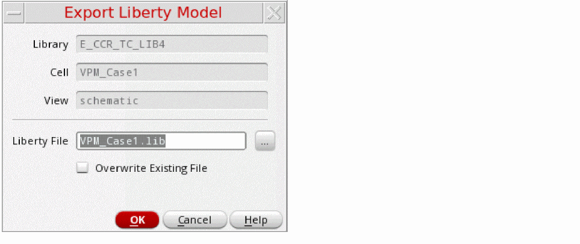

Exporting Liberty Power Model
You can export the power intent specified for the design as a Liberty power model template file with the non-characterized attributes for pg_pin and pin groups of a library or cell, such as related_power_pin, related_ground_pin, pg_type, direction, is_isolated, isolation_enable_condition, switch_pin, pg_function, switch_function, and so on.
To export power intent from a design:
- Open the cellview in the Power Manager.
- Prepare the setup for automatic extraction. For more details about how to prepare the setup, refer to Setup for Automatic Extraction of Power Intent.
- Load the setup from the Power Manager toolbar/menu.
- Click Power Manager – Extract from Design.
-
Click Power Manager – Export Liberty Model.
The Export Liberty Model Form form appears. The library, cell, and view names of the cellview that is currently open are displayed by default in the form.
 - In the Liberty File field, specify the path and the name of the file for exporting the Liberty power model.
- Select the Overwrite Existing File check box to overwrite the file.
- Click OK.
Liberty power model is the power intent at the macro model level, for complex design blocks. This can also be referred as a black box model of the power characteristics of a complex design block or a hard IP. Power Manager helps in automatically extracting the power intent from the design schematic and exporting the low power attributes to a Liberty Power Model template. It can be further integrated while extracting the power intent of the top design. The Exported Liberty Power Model, having the PG attributes can be stitched to the baseline Liberty model from an IP characterization tool to generate a complete liberty file for schematic IP ready for verification and implementation.
While creating the Liberty power model for a macro cell, the following tasks are performed:
- Identifies power nets and ground nets and their equivalent power or ground nets.
- Identifies switchable or non-switchable power nets or ground nets.
- Identifies boundary ports for the macro.
- Relates the boundary ports to the related power and ground supply pairs by tracing.
- Identifies low power special cells and the boundary ports associated with boundary ports to print the relevant attributes.
- Backtraces the data path from the control pins of the low power special cells to the macro or design ports for generating enable or shutoff conditions.
-
There is a user override, by defining
portAttribute, in the setup that declares the pin as analog. - The pin has a related power or a related ground found by tracing the power and ground path.
- The pin is not a driver or load of one or more instance pins that produce digital output, such as (Liberty or user-defined) standard cell input/output pin, which has a related power and a related ground attribute.
- The pin is not feedthrough and unconnected.
####################################################################
/*
Liberty Power Model Template (Section 1)
=============================
library : upf_export;
cell : top;
Program Version : sub-version IC6.1.8-64b.main.174 ;
*/
##################(Section 2)###################################################
library(upf_export) {
date : "Wed Mar 6 18:02:38 2019 ";
comment : "Generated by Virtuoso Power Manager";
voltage_unit : "1V";
voltage_map( VDD , 1.100000);
voltage_map( VDDA , 1.300000);
voltage_map( VDDSW , 1.100000);
voltage_map( VSS , 0.000000);
#####################(Section 3)################################################
cell(top) {
switch_cell_type : fine_grain;
is_macro_cell : true;
pg_pin(VDD) {
voltage_name : VDD;
pg_type : primary_power;
direction : inout;
}
pg_pin(VDDA) {
voltage_name : VDDA;
pg_type : primary_power;
direction : inout;
}
pg_pin(VSS) {
voltage_name : VSS;
pg_type : primary_ground;
direction : inout;
}
pg_pin(VDDSW) {
switch_function : "psw_en";
voltage_name : VDDSW;
pg_function : VDD;
pg_type : internal_power;
direction : internal;
}
######################################################
pin(en_iso) {
related_ground_pin : VSS;
related_power_pin : VDD;
direction : input;
}
pin(in1) {
related_ground_pin : VSS;
related_power_pin : VDD;
direction : input;
}
pin(out1) {
power_down_function : "!VDD + VSS";
related_ground_pin : VSS;
related_power_pin : VDD;
direction : output;
}
pin(out_iso) {
is_isolated : true;
power_down_function : "!VDD + VSS";
related_ground_pin : VSS;
related_power_pin : VDD;
isolation_enable_condition : "en_iso";
direction : output;
}
pin(out_psw) {
power_down_function : "!VDD + VSS";
related_ground_pin : VSS;
related_power_pin : VDD;
direction : output;
}
pin(outvdd) {
power_down_function : "!VDD + VSS";
related_ground_pin : VSS;
related_power_pin : VDD;
direction : output;
}
pin(psw_en) {
antenna_diode_related_ground_pins : "VSS";
switch_pin : true;
related_ground_pin : VSS;
related_power_pin : VDD;
direction : input;
}
} /* end of cell top */
} /* end of library upf_export */
The following points explain the different sections of the exported Liberty power model:
- Section1: This section includes the basic design information in terms of the library and cell names for which the Liberty power model has been extracted and the software version used for the same.
-
Section2: This section represents the library description. These are library level features and attributes.
The library levelvoltage_mapattribute associates the voltage name with the relative voltage values. These specified voltage names are referenced by thepg_pingroups defined at the cellview level. The voltage map can be a combination of both the primary power and ground supplies and bias power and ground supplies. Voltage values in the Liberty power model should follow the voltage values of the top-level design power intent where model is integrated unless a corresponding error is flagged at the power intent verification stage by CLP. -
Section3: This section represents the cell group information and the related attributes. The cell group statement gives the name of the cell being described. It appears at the library group level. The Liberty power model exports the power intent of the design, therefore, the information in this group comprises of:
-
is_macro_cell: The attribute identifies whether a cell is a macro cell. -
switch_cell_type: This attribute supports macro cells with internal switches present to generate internal power. The valid values for this attribute arecoarse_grainandfine_grain. -
Pin level attributes: The different pin level attributes, such as
pg_pin,pg_type,power_down_function,related_power_pin,related_ground_pin,input_signal_levelandoutput_signal_leveldescribe the specific information extracted from the design schematic by Power Manager extractor for all the boundary ports (PG and data). The state of these attributes is dependent on the setup registration for PG nets, connectivity, and design topology. -
Macro Cell Modeling: The attributes
is_isolated,isolation_enable_condition,switch_pin,switch_function,pg_function, andpg_typesare required for macro cell modeling. These are required to model the cells, which use low power special cells, such as isolation cells and power switch cells connected to boundary ports.
-
For more information on the 1801 commands, refer to Liberty User Guides and Reference Manual Suite (Version 2017.06).
Related Topics
Setup for Automatic Extraction of Power Intent
Extracting the Power Intent from a Design
Special Isolation Cells in Liberty Power Model Export
Return to top